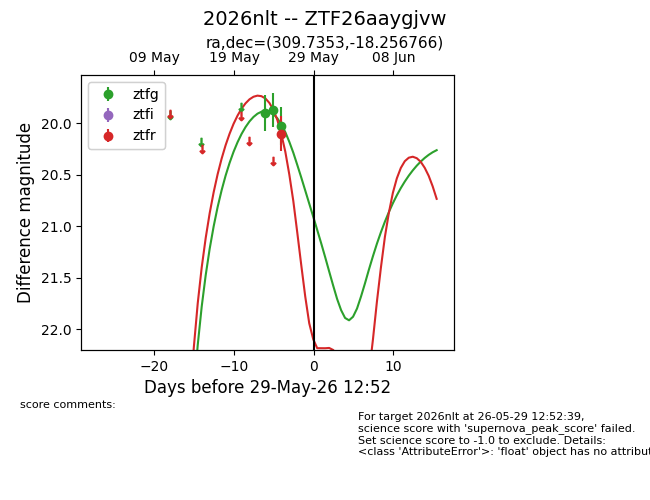
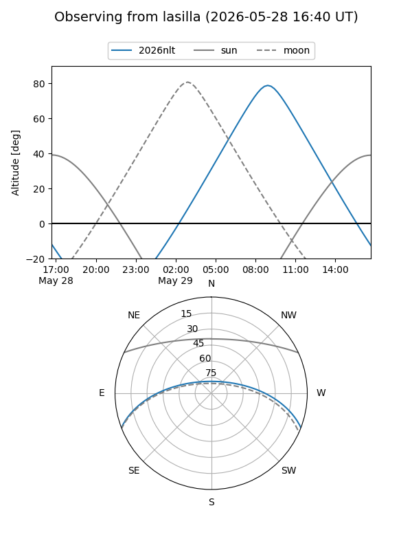
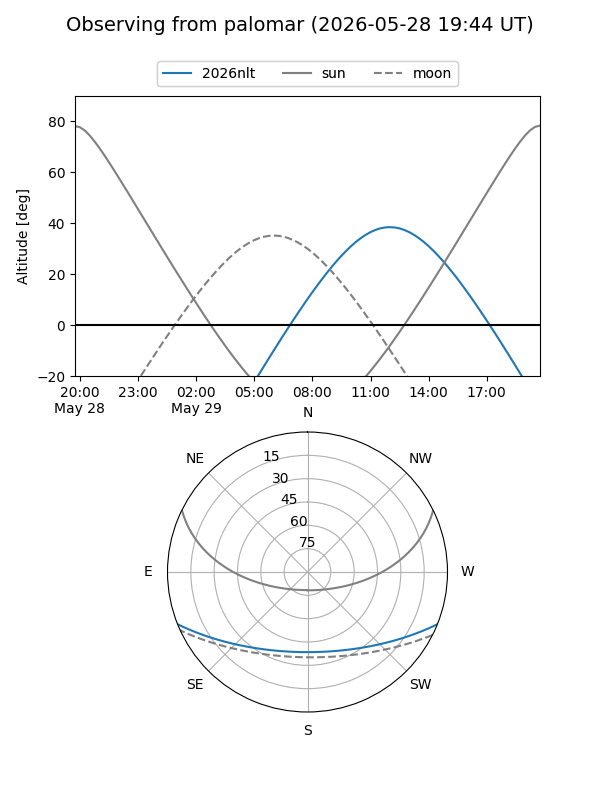
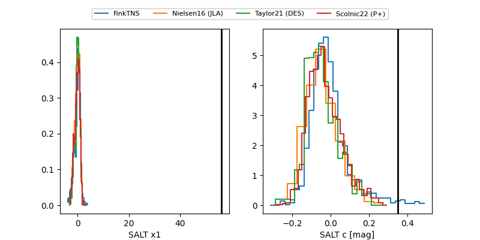

2026nlt
Target 2026nlt at 2026-05-29 12:54
Aliases and brokers:
lsst-FINK: link
lsst-Lasair: link
lsst-ALeRCE: link
ztf-FINK: link
ztf-Lasair: link
ztf-ALeRCE: link
TNS: link
YSE: link
alt names
ZTF26aaygjvw (ztf,fink_ztf)
2026nlt (tns,yse)
Coordinates:
equatorial (ra, dec) = 309.7353,-18.25677
equatorial (HMS+DMS) = 20:38:56.47,-18:15:24.36
galactic (l, b) = (27.3320,-31.66306)
Flags:
TNS confirmed: nan
Photometry:
last ztfg=20.03, ztfr=20.10
3 ztfg, 1 ztfr detections
Lightcurve

Visibility


Additional plots
